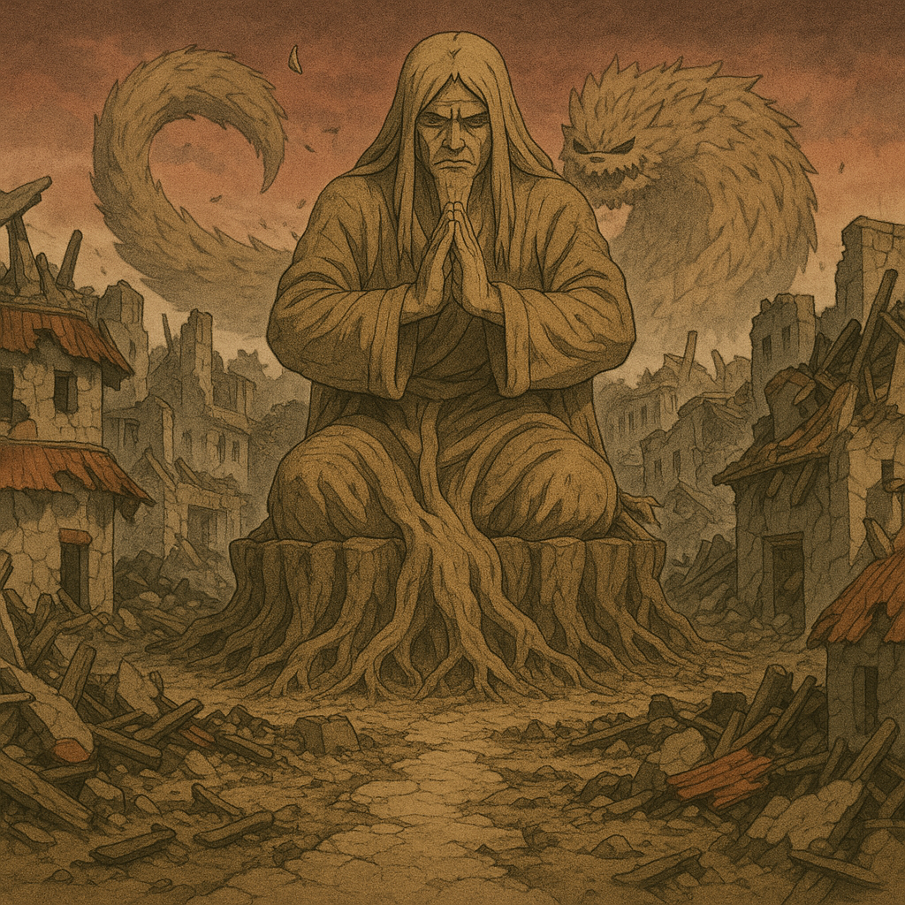
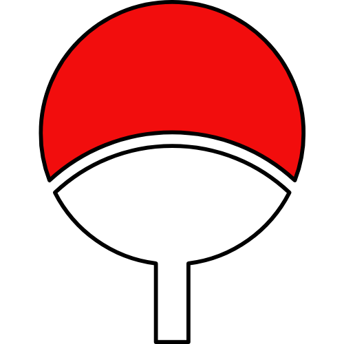
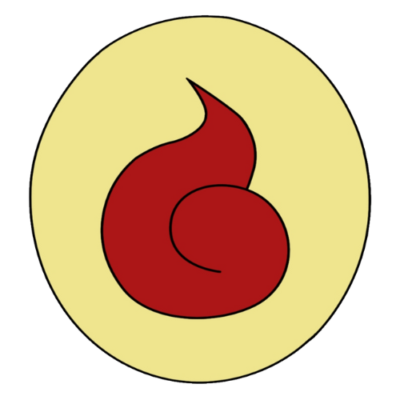
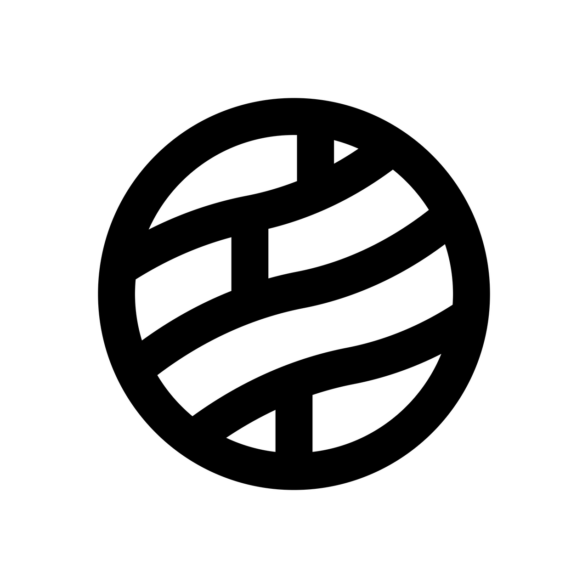
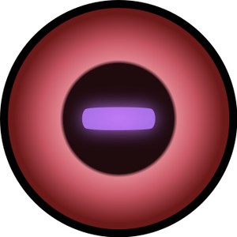

Qu'est-ce que RTS ?
RTS est un serveur de jeu de rôle basé sur l'univers de Naruto, où tu peux incarner un ninja et vivre des aventures épiques. Crée ton personnage, choisis ton village et rejoins la bataille !
❖ Lore – L'après-cendres : la renaissance du monde shinobi
Le monde de Shinobi
Dans un monde ravagé par les guerres de clans, cinq grandes nations ninja luttent pour maintenir la paix et défendre leurs intérêts. Le destin de chacun se forge dans le feu du combat, la ruse des stratégies et les liens du sang.
Konoha - Le Village Caché de la Feuille
Dans les cendres encore tièdes de la guerre, un nouveau Hokage a été élu. Peu connu du grand public, ce dernier doit désormais porter l’héritage d’un homme-Dieu, tout en relevant un village meurtri. Les clans sont divisés : certains réclament vengeance, d'autres prônent la paix. Les jeunes ninjas s'entraînent plus durement que jamais, tandis que les anciens forment une nouvelle génération de protecteurs. Les rumeurs courent que l'organisation à l’origine de l’attaque n’a pas été entièrement dissoute… Certains parlent d’experiments interdits, d’anciens déserteurs et même de pactes démoniaques. Le danger rôde encore, et personne ne sait où frappera la prochaine ombre.
Village de Kiri (Kirigakure) - Le Brouillard en Marche
L’Ascension Brumeuse Pendant que Konoha panse ses plaies, Kiri se renforce. La Brume Sanglante, autrefois instable, a trouvé une direction claire : la puissance. Grâce à la réactivation des légendaires Sept Épéistes, le village est à l’apogée de sa puissance militaire. Des forges anciennes ont été réveillées, des sabreurs oubliés sont revenus de l’exil, et des armes maudites circulent à nouveau dans les ruelles dissimulées de Kiri. Sous le commandement d’un Mizukage aussi froid que stratégique, Kiri se positionne comme un acteur dominant, prêt à profiter du vide de puissance laissé par la chute d’Hashirama. Certains prétendent que Kiri aurait secrètement aidé l’organisation ayant attaqué Konoha, en échange d’une place dans le futur ordre du monde shinobi…
Clans de Konoha
❖ Passez votre souris sur les cartes pour découvrir les clans !Uchiha
Le clan Uchiha est l'un des clans les plus puissants de Konoha, connu pour son Sharingan, un dojutsu qui leur confère des capacités exceptionnelles. Ils sont spécialisés dans les techniques de ninjutsu et de genjutsu, utilisant leur intelligence stratégique pour dominer leurs adversaires. Le clan Uchiha a une histoire riche et complexe, marquée par des rivalités internes et des luttes de pouvoir.
Hyuga
Le clan Hyuga est réputé pour son Byakugan, un dojutsu qui leur confère une vision exceptionnelle. Ils sont spécialisés dans les techniques de taijutsu, utilisant leur puissance physique pour dominer leurs ennemis. Le clan Hyuga joue un rôle majeur à Konoha et a une grande influence politique, notamment grâce à son style de combat unique et à sa discipline rigoureuse.
Senju
Le clan Senju est l'un des clans fondateurs de Konoha, connu pour sa puissance et sa sagesse. Ils sont spécialisés dans les techniques de ninjutsu et de taijutsu, utilisant leur force physique et leur intelligence stratégique pour dominer leurs adversaires. Le clan Senju a une histoire riche et complexe, marquée par des rivalités internes et des luttes de pouvoir.
Nara
Le clan Nara est connu pour son intelligence stratégique et ses techniques de manipulation des ombres. Ils sont spécialisés dans les techniques de ninjutsu et de genjutsu, utilisant leur intelligence pour dominer leurs adversaires. Le clan Nara joue un rôle majeur à Konoha et a une grande influence politique, notamment grâce à son style de combat unique et à sa discipline rigoureuse.
Clans de Kiri
❖ Passez votre souris sur les cartes pour découvrir les clans !Hôzuki
Le clan Hôzuki est connu pour sa capacité à manipuler l'eau et à utiliser des techniques de ninjutsu aquatique. Ils sont spécialisés dans les techniques de ninjutsu et de taijutsu, utilisant leur puissance physique pour dominer leurs ennemis. Le clan Hôzuki joue un rôle majeur à Kiri et a une grande influence politique, notamment grâce à son style de combat unique et à sa discipline rigoureuse.
Terumi
Le clan Terumi est réputé pour sa capacité à manipuler la brume et à utiliser des techniques de ninjutsu brumeux. Ils sont spécialisés dans les techniques de ninjutsu et de taijutsu, utilisant leur puissance physique pour dominer leurs ennemis. Le clan Terumi joue un rôle majeur à Kiri et a une grande influence politique, notamment grâce à son style de combat unique et à sa discipline rigoureuse.
Yuki
Le clan Yuki est réputé pour sa capacité à manipuler la glace et à utiliser des techniques de ninjutsu glacé. Ils sont spécialisés dans les techniques de ninjutsu et de taijutsu, utilisant leur puissance physique pour dominer leurs ennemis. Le clan Yuki joue un rôle majeur à Kiri et a une grande influence politique, notamment grâce à son style de combat unique et à sa discipline rigoureuse.
Chinoike
Le clan Chinoike est connu pour sa capacité à manipuler le sang et à utiliser des techniques de ninjutsu sanguin. Ils sont spécialisés dans les techniques de ninjutsu et de taijutsu, utilisant leur puissance physique pour dominer leurs ennemis. Le clan Chinoike joue un rôle majeur à Kiri et a une grande influence politique, notamment grâce à son style de combat unique et à sa discipline rigoureuse.